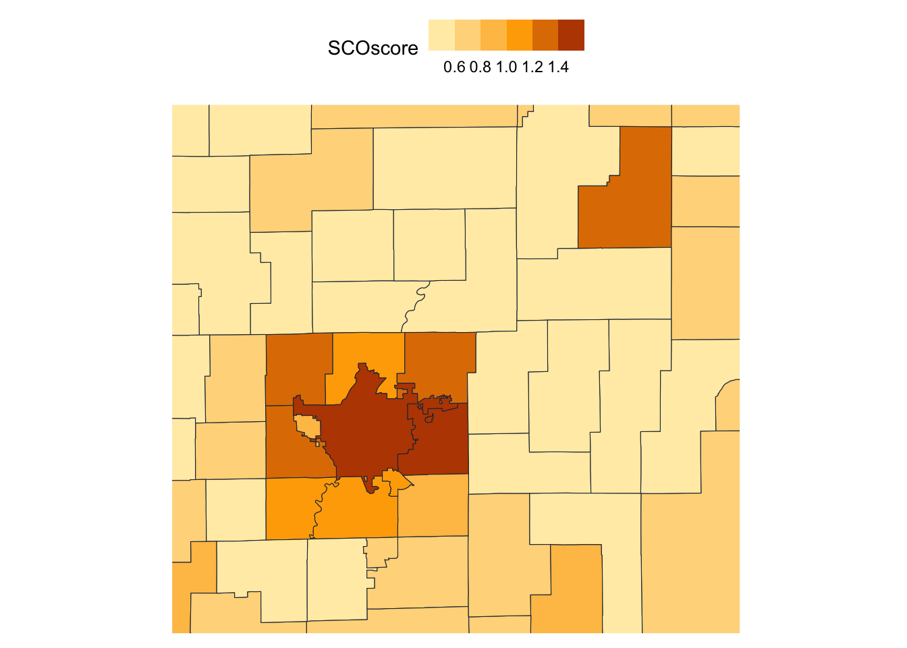
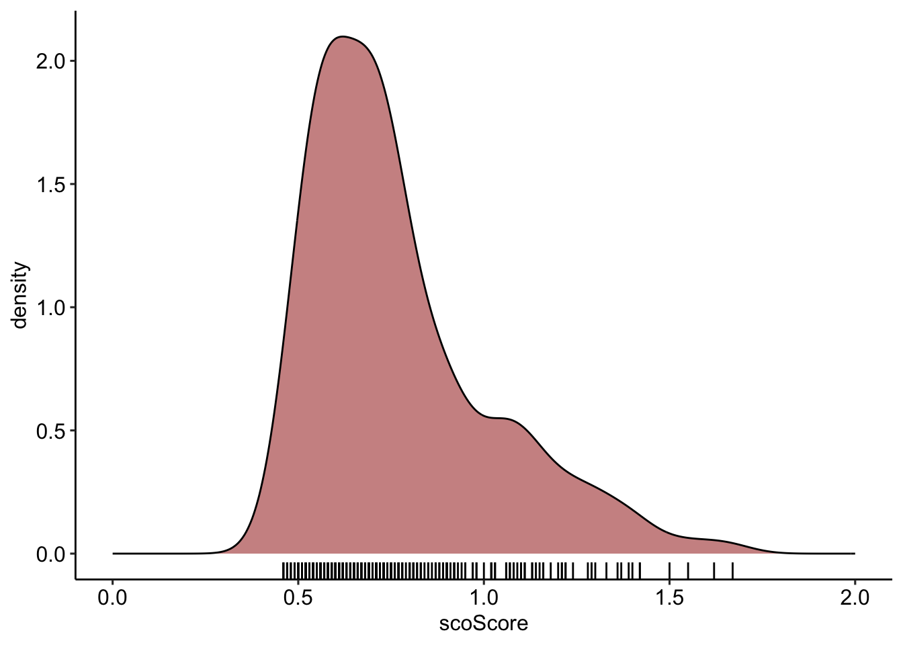
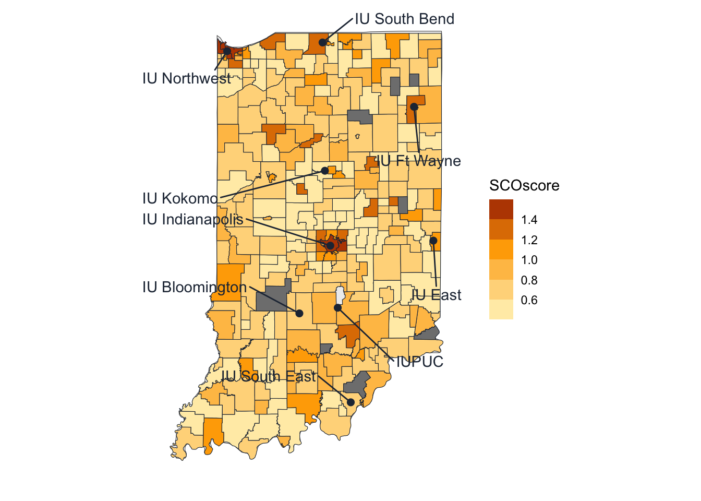
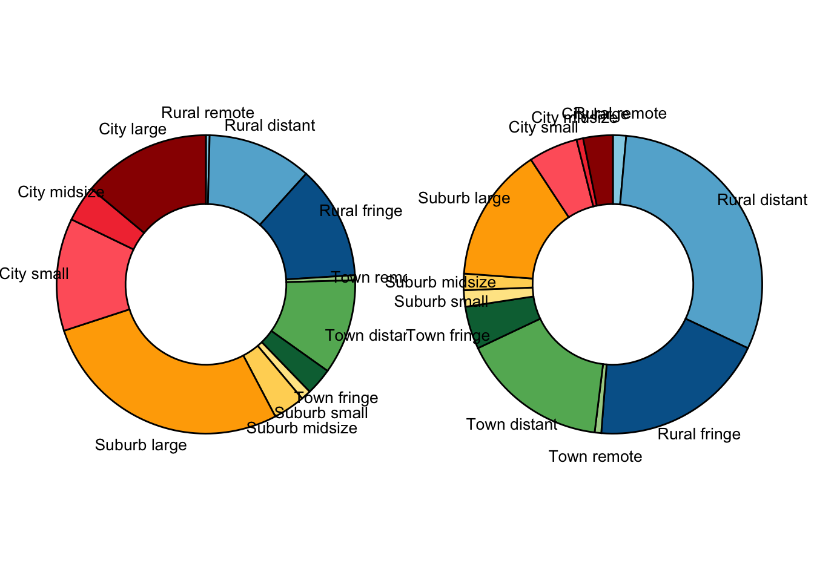
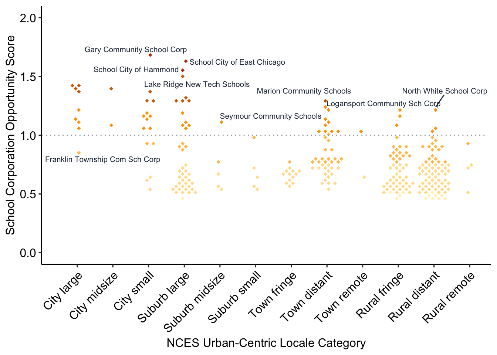
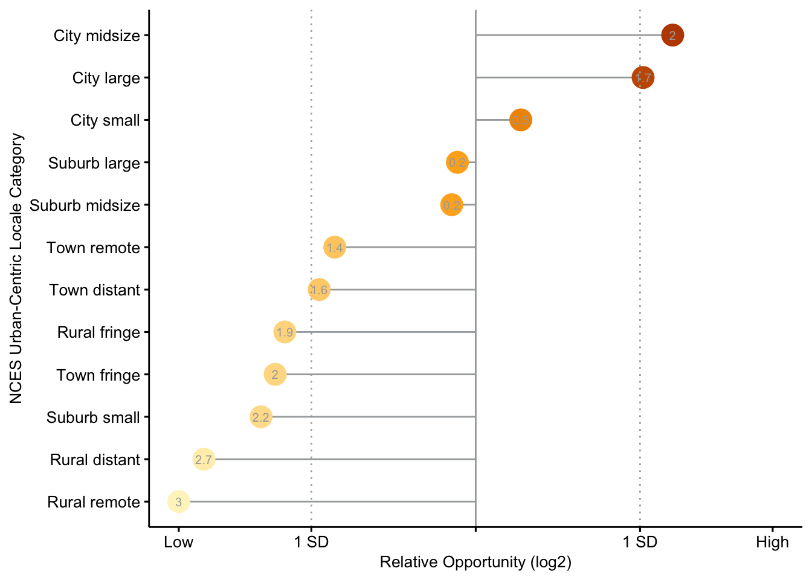

SCOscore: School Corporation Opportunity Score
![]()
Introduction
The School Corporation Opportunity Score (SCOscore) is a measure of potentiality for learners in a school community. It is a composite score that combines multiple factors, particularly structural factors such as race and SES, as well as performance factors such as test scores and graduation pathway completion rates, to provide a more holistic view of school corporations.
Methods
The SCOscore of a school corporation is calculated through the following formula:
\[ S_{O} = \frac{\left[\left(P_{urm} \times 1.5\right) + \left(P_{frl} \times 1.5\right) + S_{ac}\right]}{3} \]
where \(S_{O}\) is the SCOscore, \(P_{urm}\) is the proportion of underrepresented minority students, \(P_{frl}\) is the proportion of students eligible for free or reduced lunch, and \(S_{ac}\) is an academic achievement score for the corporation as a whole.
The academic achievement score accounts for 3rd grade ELA proficiency, 8th grade math proficiency, and graduation pathways completion rates. In order to account for those factors, the following equation is utilized:
\[ S_{ac} = \frac{\left(S_{a_{ela}}^\prime + S_{a_{math}}^\prime + S_{a_{gpc}}^\prime\right)}{3} + 1 \] where \(S_{a_{ela}}^\prime\) is the calculated 3rd grade ELA proficiency measure, \(S_{a_{math}}^\prime\) is the calculated 6th grade math proficiency measure, and \(S_{a_{gpc}}^\prime\) is the calculated graduation pathway completion measure.
The \(S_a^\prime\) measures are determined in the following manner:
\[ f(S_a^\prime) = \begin{cases} (S_{IN} - S_a) + 1, & \text{if } S_a < S_{IN} \\ 0, &\text{otherwise} \end{cases} \]
where \(S_a\) is the school corporation average proficiency or completion rate and \(S_{IN}\) is the state-level average proficiency or completion rate.
Acknowledging Inequality Within School Corporations
It needs to be recognized that there is the potential for inequality within a single school corporation and the SCOscore is calculated based on reported averages across all schools in the corporation. The school corporation-level score should be considered within the local building context. A building or school-level score can be calculated using the same general equation:
\[ S_{O} = \frac{\left[\left(P_{urm} \times 1.5\right) + \left(P_{frl} \times 1.5\right) + S_{ac}\right]}{3} \]
Rather than calculating a combined academic score, however, the specific academic measure–3rd grade ELA proficiency rates for elementary schools, 6th grade math proficiency rates for middle schools, and graduation pathways completion rates for high schools–can be used. The \(S_a^\prime\) still needs to be calculated by comparing the measure to the Indiana statewide average as above, where it becomes \(0\) if it is above the statewide average or \((S_{IN} - S_a) + 1\) if it is below the statewide average.
It is also important to consider the status of charter schools when identifying schools to work with. Despite the “public school” designation by the Indiana Department of Education, charter schools are not technically public schools in important ways, particularly when it comes to accountability to the community in which they are embedded. Other problematic issues with respect to oppression by race and ability are well-documented.
SCO Scores and Critical Quantitative Methodologies
The School Corporation Opportunity Score model can be seen as consistent with the five tenents of Critical Quantitative (QuantCrit) methodologies (Gillborn, Warmington, and Demack 2018), or at least can be utilized in light of QuantCrit. In particular, the SCO scores model is intended to be utilized for social justice, recognizes the centrality of racism, pushes back on static categories, and through transparency attempts to illuminate that numbers are not neutral.
We also recognize, however, that the SCO scores model violates several principal values of the QuantCrit methodology (Young and Young 2022). SCO scores are based on comparative assumptions, comparing typically “successful” school corporations (predominantly white, predominantly wealthy) with those that are not. Even with an assets-based framing (“opportunity” rather than “need”)–or at least a positive spin–school corporations that are predominantly white and wealthy “[hover] over Black and Latinx scores, which creates academic imagery that promotes racial achievement hierarchies and White supremacy” (Young and Young 2022, 392). Even though it is the school corporations with high Black, brown, immigrant, refugee, and poor populations that rise up, it still creates a sense of (inverted) hierarchies.
What would an approach more tightly entwined with QuantCrit methodologies look like? The single-group summary meta-analysis proposed by Young and Young (2022) provides guidance. Academic achievement–through the measures provided by the Indiana Department of Education’s GPS Dashboard (Indiana Department of Education 2023)–can be examined over time for specific groups of interest (e.g., Black students, Latinx students, refugee students, recipients of free or reduced lunch, etc.) and an effect size can be calculated for each group independently. If the effect size for any particular group is less than or equal to 0.4, that school corporation becomes a high opportunity school corporation because the potential achievement of that group of students has not yet been realized. This would provide a much more textured and measured approach to understanding the experiences of under- or mis-supported student populations.
Data Sources
Data for these calculations are drawn from the following sources:
- Indiana Department of Education’s Indiana Graduates Prepared to Succeed (GPS) Dashboard (Indiana Department of Education 2023).
- Urban Institute’s Education Data Explorer via the educationdata R package (Ueyama 2022).
School Corporation Opportunity Scores (SCO Scores)
This section will highlight three areas for consideration: School corporation SCO scores in central Indiana; SCO score trends across the state; and, a brief examination of SCO scores by urban-centric locale categories.
There is an Indiana SCO Score Dashboard available, in which you can explore the data in more detail and depth.
Central Indiana
The primary purpose of this model is to provide insight into identifying high-opportunity school corporations for IU-Indianapolis faculty, staff, and projects. The school corporations in Central Indiana (Indianapolis–Carmel–Anderson Metropolitan Statistical Area) with SCOscores greater than 1 are as follows:
| School.Corporation | Enrollment | SCO.Score |
|---|---|---|
| Indianapolis Public Schools | 22115 | 1.42 |
| MSD Warren Twp | 11801 | 1.42 |
| MSD Wayne Twp | 16343 | 1.39 |
| MSD Pike Twp | 10928 | 1.37 |
| Anderson Community Schools | 6470 | 1.30 |
| MSD Lawrence Twp | 16247 | 1.29 |
| MSD Washington Twp | 10901 | 1.13 |
| Perry Twp Schools | 16603 | 1.11 |
| Beech Grove City Schools | 2837 | 1.10 |
| MSD Decatur Twp | 6681 | 1.07 |

Most of the high opportunity schools are centered in Marion County (with the notable exception of Anderson Community Schools). Indianapolis Public schools and the Metropolitan School District (MSD) of Warren Township are the school corporations with the highest opportunity scores in central Indiana, with a SCO score of 1.42. The MSD of Wayne Township and the MSD of Pike Township also have high opportunity scores (1.39 and 1.37, respectively). The other school corporations listed are also high opportunity. Please note the sections above on inequalities within school corporations and the status of charter schools when reaching out to a specific school building.
State Trends
Overall, most of Indiana’s school corporations’ opportunity score fall under 1 (Figure 2). This indicates that the majority of Indiana school corporations have low levels of non-white students, low levels of students who qualify for free or reduced lunch, relatively high achievement, or some combination of the three. Many of the school corporations in Indiana fall between the 0.5 and 1 range. This doesn’t mean that there isn’t opportunity in these school corporations, particularly for those students who experience structure barriers and oppression; rather, as a matter of general priorities, the school corporations that score greater than 1 will see a higher level of potential in terms of growth.

Over the state of Indiana as a whole (Figure 3), high opportunity school corporations are centered in Marion County (the Indianapolis area) and Lake County (the Northwest Region of Indiana). There are certainly other school corporations around the state that score above 1 in terms of opportunity, but they do not cluster in the same way as those in Marion and Lake Counties.

Urban-Centric Locale SCO Scores
The National Center for Educational Statistics utilizes the urban-centered locale classification to categorize school districts and corporations into rural, town, suburban, and urban areas. These categories are further divided into large, medium, and small for urban and suburban areas and fringe, distant, and remote for towns and rural areas.
School corporations in Indiana span the full spectrum of these categories. While there is a higher number of school corporations that are rural, a much larger number of students attend urban and suburban schools.

Figure 5 visualizes the SCO scores by urban-centered locale classification. Each of the dots represents an individual school corporation. This plot provides insight into how the school corporation opportunity scores are distributed across the urban-centered local classifications.

We can then look at the relative opportunity for the various urban-centered locale classification (Figure 6). The line in the center of the plot is the mean relative opportunity. As a class, school corporations in cities have higher relative opportunity than in other locales. This does not mean that there are not high opportunity school corporations in other locale classifications (there are), but rather this provides a sense of high-level priority which can then be broken down further and examined locally and in context.

Repositories
Repositories that connect with this project can be found in the following locations.
Session Information
Session information is provided for reproducibility purposes.
#> ─ Session info ───────────────────────────────────────────────────────────────
#> setting value
#> version R version 4.3.0 (2023-04-21)
#> os macOS Ventura 13.4
#> system aarch64, darwin20
#> ui X11
#> language (EN)
#> collate en_US.UTF-8
#> ctype en_US.UTF-8
#> tz America/Indiana/Indianapolis
#> date 2023-06-15
#> pandoc 3.1.3 @ /opt/homebrew/bin/ (via rmarkdown)
#>
#> ─ Packages ───────────────────────────────────────────────────────────────────
#> package * version date (UTC) lib source
#> dplyr * 1.1.2 2023-04-20 [1] CRAN (R 4.3.0)
#> DT * 0.28 2023-05-18 [1] CRAN (R 4.3.0)
#> edbuildmapr * 0.3.1 2021-06-15 [1] CRAN (R 4.3.0)
#> ggbeeswarm * 0.7.2 2023-04-29 [1] CRAN (R 4.3.0)
#> ggmap * 3.0.2 2023-03-14 [1] CRAN (R 4.3.0)
#> ggplot2 * 3.4.2 2023-04-03 [1] CRAN (R 4.3.0)
#> ggpubr * 0.6.0 2023-02-10 [1] CRAN (R 4.3.0)
#> ggrepel * 0.9.3 2023-02-03 [1] CRAN (R 4.3.0)
#> here * 1.0.1 2020-12-13 [1] CRAN (R 4.3.0)
#> knitr * 1.42 2023-01-25 [1] CRAN (R 4.3.0)
#> mapdata * 2.3.1 2022-11-01 [1] CRAN (R 4.3.0)
#> maps * 3.4.1 2022-10-30 [1] CRAN (R 4.3.0)
#> plotly * 4.10.2 2023-06-03 [1] CRAN (R 4.3.0)
#> readr * 2.1.4 2023-02-10 [1] CRAN (R 4.3.0)
#> sf * 1.0-13 2023-05-24 [1] CRAN (R 4.3.0)
#> tidyr * 1.3.0 2023-01-24 [1] CRAN (R 4.3.0)
#>
#> [1] /Library/Frameworks/R.framework/Versions/4.3-arm64/Resources/library
#>
#> ──────────────────────────────────────────────────────────────────────────────References
Reuse
Citation
@misc{price2023,
author = {Price, Jeremy and Arora, Akaash and Bulanov, Maxim and
Knoors, AJ},
title = {SCOscore: {School} {Corporation} {Opportunity} {Score}},
date = {2023},
url = {https://github.com/jeremyfprice/scoscore},
doi = {10.17605/OSF.IO/ZT9UX},
langid = {en}
}